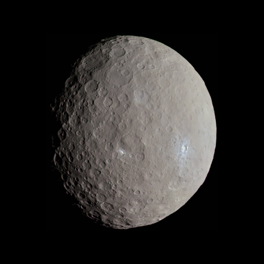
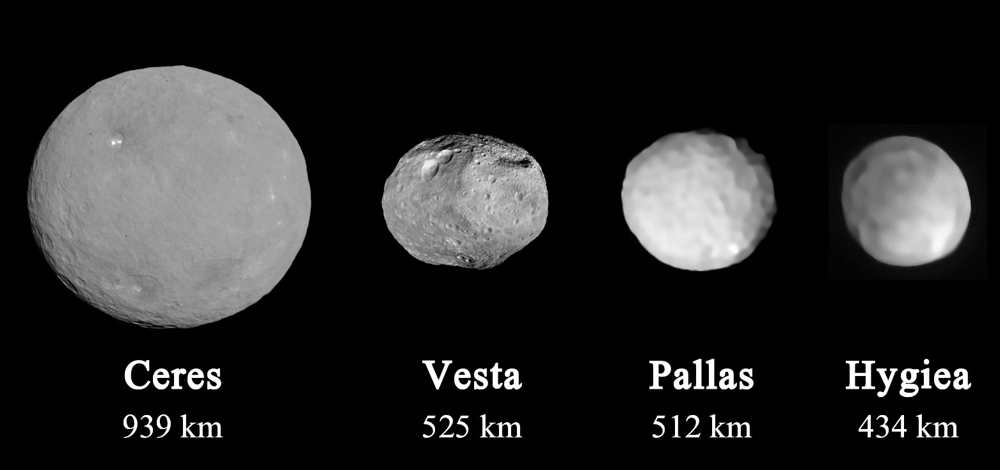
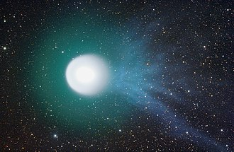

Малі тіла Сонячної системи — астрономічні об'єкти Сонячної системи менші за планети.
Окрім восьми планет та Сонця у Сонячній системі існують малі тіла. До них належать: астероїди, комети, метеорні тіла та метеорити, міжпланетний пил.
У наш час з’явилося нове поняття – космічне сміття. Космічне сміття – це сукупність штучних об’єктів та їх уламків чи фрагментів у космосі, які не здатні функціонувати, але можуть завдати шкоди чи зруйнувати космічний корабель, супутник чи міжпланетну станцію.
Астероїди
Астероїди – тверді небесні тіла, які рухаються навколо Сонця еліптичними орбітами і мають діаметр від 50 м до 1000 км.
Перша мала планета була відкрита 1801 року і отримала назву Церера. Вона залишається найбільшим відомим астероїдом, маючи діаметр близько 900 км.
Незабаром було знайдено й інші малі планети, які отримали назви Паллада, Веста і Гігея. Застосовуючи фотографію, почали відкривати й менші за діаметром астероїди.
Більшість астероїдів розташовані між орбітами Марса і Юпітера, маючи при цьому середню відстань від Сонця 2,75 а.о. (ці астероїди формують головний пояс астероїдів). Загальна маса усіх астероїдів поясу оцінюється в (3,0—3,6)×10^21 кг.
| Діаметр астероїда | Приблизна кількість |
|---|---|
| Більше 100 км | 200 |
| Більше 10 км | 10000 |
| Більше 1 км | 750000 |
| Більше 100 м | 25000000 |
Комети
Комета — мале тіло Сонячної системи, яке обертається навколо Сонця і має кому (атмосферу навколо комети) та/або хвіст, причому кома і хвіст є наслідками випаровування поверхні ядра комети під дією сонячного випромінювання
Комети мають діаметри від кількох сотень метрів до десятків кілометрів.
Ядро комети складається з льоду та дрібних пористих кам'янистих частинок.
Вважається, що комети походять із Хмари Оорта, яка знаходиться на великій відстані від Сонця і складається із "сміття", що залишилось після конденсації сонячної туманності. Зовнішні краї цієї хмари достатньо холодні для того, щоб вода існувала там у твердому (а не газоподібному) стані.
Комета має маленьке ядро, що є єдиною її твердою частиною. Незважаючи на технічний розвиток, ядро комети і донині телескопічним спостереженням недоступне, тому що світна матерія, яка безупинно виходить із ядра, не дозволяє побачити "серце" комети.
У комет із наближенням до Сонця утворюється «хвіст» — слабка світна смуга, що в результаті дії сонячного вітру найчастіше спрямована у протилежну від Сонця сторону.